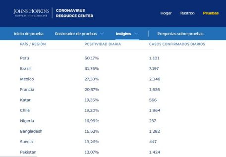

El creador de prueba PCR no dijo que su invento no servía para detectar virus
¿El inventor del PCR dijo que su prueba no servía para detectar virus?No, no hay pruebas que demuestren que Kary Mullis haya dicho tal cosa.Sin embargo, esa falsa afirmación circula en redes sociales para desacreditar la pandemia de COVID-19 y la existencia de personas infectadas que no desarrollan síntomas.Pero nada de esto tiene sustento.
En Facebook, Twitter, Instagram, Reddit y WhatsApp circuló cientos de veces una imagen que dice: 'La fiabilidad de los tests, es nula, se están dando cientos de miles de positivos, que no son ciertos.Los 'ASINTOMÁTICOS', no existen.>>Kary Mullis, premio nobel de Química en 1993, creador del famoso test PCR Toda su vida señaló que el test NO sirve para detectar un virus'.
Esta supuesta información fue retomada en redes sociales para sustentar que los enfermos de COVID-19 sin sintomas son sólo una 'ilusión', y las cifras de personas positivas a SARS-CoV-2 en realidad son usadas para 'manipular masas' y 'ordenar el confinamiento' a nivel mundial.Pero nada de esto se puede probar.
Kary Banks ganó el premio Nobel de química en 1993 por idear la prueba PCR, que además de detectar enfermedades infecciosas, también diagnostica trastornos hereditarios, y ayuda a realizar experimentos ligados a la investigación científica.
Según la publicación viral, Mullis señaló 'toda su vida que el test NO sirve para detectar un virus'.Sin embargo, no pudimos encontrar ningún registro desde 1993 hasta 2019, año en el que falleció.
Los verificadores de AFP, Newtral y Doble Check revisaron la misma afirmación y tampoco encontraron pruebas que demuestren que Mullis dijo que la PCR no sirve para detectar cargas virales.
Lo que sí encontraron es que esta afirmación falsa pudo ser producto de una mala interpretación sobre la postura de Mullis y el SIDA.El inventor de las pruebas PCR divulgó la falsa teoría de que el SIDA no está provocado por un virus, sino que surge por la exposición a muchos otros agentes patógenos.En esta lógica, él afirmó que la prueba PCR no servía para detectar el virus que causa el SIDA.
Por otra parte, hay un artículo de John Lauritsen publicado en 1996 sobre las pruebas PCR.El texto contiene citas de Mullis, pero también afirmaciones de John Lauritsen.
Dice por ejemplo que: 'Aunque existe la impresión errónea de que las pruebas de carga viral realmente cuentan la cantidad de virus en la sangre, estas pruebas no pueden detectar virus infecciosos libres en absoluto'.
Pero entonces, quién dijo esto no fue el inventor de la PCR, sino John Lauritsen, quien hablaba de la posibilidad de medir la carga viral o la cantidad de virus, que no es lo mismo que detectar o no la presencia de un virus.
El periodismo libre necesita de sus lectores.Sigamos contando las historias que importan.
#YoSoy
Animal
Las pruebas PCR también se llaman pruebas de reacción en cadena de la polimerasa (PCR, por sus siglas en inglés), detectan directamente el ARN (ácido ribonucleico), que es el material genético específico del virus presente en las muestras tomadas de secreciones respiratorias del paciente.
Este mismo tipo de pruebas ya se ha usado antes para la detección de virus, por ejemplo, se usó en 2009 cuando se suscitó la pandemia de Influenza AH1N1 o para identificar a los infectados con el virus del ébola.
El subsecretario de Salud, Hugo López Gatell, ya ha explicado cómo funcionan este tipo de test: 'Se toma una muestra de la secreción respiratoria en la que existen virus –en este caso es coronavirus– y se hace un procesamiento en donde se extrae el material genético del virus: el Ácido Ribonucleico (ARN).Una vez extraído por un proceso de síntesis química se multiplica el material genético, y luego hay un mecanismo de detección de ese material genético que es específico para este virus y cuando se alcanza cierto número de copias esto se vuelve detectable, así funciona la PCR'.
JoséManuel Bautista, catedrático de Biología Molecular que coordinó el laboratorio de detección COVID-19 de la Universidad Complutense de Madrid, dijo a Maldita.es que 'no es cierto que la PCR que se está utilizando ahora sea inespecífica'.
'Los cebadores para amplificar (sustancias necesarias en la reacción en que se basa las PCR) son específicos para SARS-CoV-2 (el coronavirus que causa la enfermedad) y no para otros virus.Está demostrado en muchas publicaciones.Hay otros PCR generalistas para detectar más coronavirus, pero los que se usan ahora son altamente específicos', señaló.
Si una persona da positivo a COVID-19 en una prueba PCR significa que tiene el virus SARS-CoV-2 en su cuerpo.Eso no necesariamente significa que esté enfermo, pero sí que es capaz de transmitir el virus a otras personas, aunque no tenga síntomas.
La OMS dice que 'según algunas informaciones, las personas sin síntomas pueden transmitir el virus.Aún no se sabe con qué frecuencia ocurre.La OMS está estudiando las investigaciones en curso sobre esta cuestión'.
Cómo te contamos en esta otra nota, la doctora Rocío Tirado Mendoza, académica del Departamento de Microbiología y Parasitología de la Facultad de Medicina de la UNAM señaló que 'Estas personas asintomáticas que comprueban que son portadores del virus mediante una prueba.Independientemente de si tienen síntomas o no, son portadores del virus y pueden diseminarlo'.
Aunque las pruebas PCR no son las únicas que se realizan a nivel mundial, no se puede afirmar que este tipo de test se usan para sumar casos COVID, pues no todas las pruebas que se realizan dan resultados positivo.
Esto se ve reflejado en las cifras de la Universidad Johns Hopkins, quien mide la tasa de positividad.Es decir, calcula de todas las pruebas realizadas,cuántas dieron positivo por COVID-19.En la siguiente captura se muestra que la tasa de positividad, actualizada hasta el 12 de agosto, en los países no supera el 50%.
En conclusión: No hay pruebas de que el creador del PCR negara que su test puede detectar virus.Tampoco es verdad que todas las pruebas que se realizan dan positivo a COVID-19
Lo que hacemos en Animal Político requiere de periodistas profesionales, trabajo en equipo, mantener diálogo con los lectores y algo muy importante: independencia.Tú puedes ayudarnos a seguir.Sé parte del equipo.Suscríbete a Animal Político, recibe beneficios y apoya el periodismo libre.
#YoSoyAnimal
Posted On: 2020-08-13T00:00:00

Content Date: 2020-08-13
Download Date: 2021-04-08
Document ID: L0C049JUP